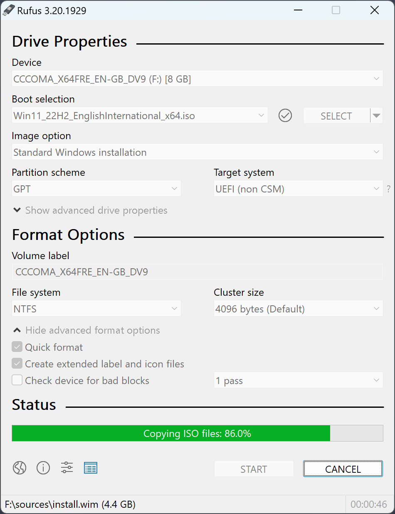
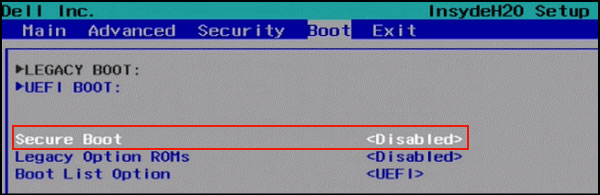
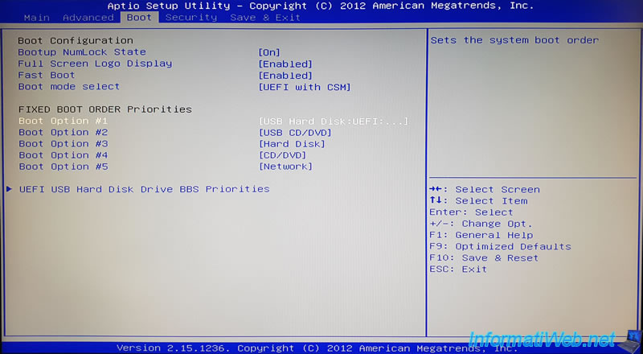

Published: 27 July 2025 (updated 11 March 2026)
Introduction: Windows 10 is dead, and the problems with recent Windows, including 11.
Windows 10 reached EOL (End of Life) in October 2025, this means it will not get updates anymore, including security ones. This means your computer will not be patched when future vulnerabilities are discovered. This means staying on Windows 10 will leave your PC vulnerable!!
Now, Windows in recent years has really suffered a degredation in quality in my opinion, with 11 being stuffed full with ads, bloatware (unecessary rubbish) and spyware. One notable example has been Windows Recall, this co-pilot+ PC only feature (but you can bet it'll be rolled out further later!) spys on you by taking screenshots of your PC every 30 seconds for "your convenience".
The "Ahum Akctually" brigade will be piping up at this point to tell me the screenshots are encrypted and its all processed locally.. and whilst thats true, I still believe this feature is beyond creepy. I do not want my computer taking screenshots of EVERYTHING i do, and this is just one example. Microsoft in recent years has also primarily made money through data and advertising, so why should they be trusted to keep your digital life private? (which they don't).
Windows 11 also has high system requirements. Requiring a TPM 2.0 chip and double the RAM (Memory) of most Linux distributions. TPM 2.0 is generally only supported on PCs built around 2017/18 or newer. Many people still have PCs made before 2017, this means Microsoft has confined millions of still very capable machines to landfill with Windows 11.
Or have they? With Linux, you can make your PC last longer, whilst making it more secure/private and perform better!

What is Linux? and why you should switch to it?
Unlike Windows, Linux is not a singular operating system, rather it is a kernel (the thing that makes your OS talk to the PC itself). There are many different distributions (or distros for short) avaliable, meaning there's probably a flavour of Linux that can serve your needs perfectly.
Theres a good chance the Linux distro you choose will not have the spyware, bloatware and ad junk like Windows does. Linux also needs far less powerful computers to run, if your computer was made in the last 15 years, theres a good chance it'll run Linux well.
As most Linux distros are nowhere near as bloated as Windows, there is a good chance you will notice your PC feels faster than it did on windows. Also, Linux is not as heavily targeted by hackers as Windows is, so if good practices are followed, a Linux experience can be more secure than a Windows one. Also, as it's not filled with Microsoft spyware and AI slop, it'll also respect your digital privacy.
In recent years, Linux has seen massive improvements in general usability. You could totally swap Microsoft Office for Libre Office and Windows 11 for Linux Mint, the change would not be as radical as you think! Also, thanks to Steam's proton (A compatibility app that comes with Steam, it allows Windows games to run. The Steam deck uses it!) you can even play a decent number of games on Linux!
Linux is also what we call open source. This means the code is avaliable for public viewing, this is certainly not the case for Windows. With open source, we can see how exactly our OS is being made, so the creators can be challenged if something isn't right. It also means software can be audited by specialist individuals to check if its really up to scratch.
How to switch:
First of all we are going to need to chose a distribution of Linux to replace Windows with. I recommend doing what I did and go with the standard version of Linux Mint Cinnamon (maybe Linux Mint XFCE if your machine is really old). Mint is familliar, it has a similar layout to Windows 10, its much lighterweight than Windows whilst still having features you actually want (Libre Office is pre-installed), theres plenty of community support, and its just low hassle. You can download an ISO image file at: https://www.linuxmint.com/download.php

You are also going to need a USB stick, I'd recommend one with at least 32 or 64GB of capacity. Chances are you have one already (if you aren't using it for something else!). If not, you can buy one from just about anywhere. Your local supermarket, eBay, Amazon etc all sell USB sticks these days and are cheap enough.
Next, download Rufus onto your Windows PC. This can be downloaded from: https://rufus.ie/en/. This is simply the best USB flashing software if you're on Windows, by far. You simply select your linux mint ISO, select your USB drive and click "start"!

We then need to actually install Mint onto the computer. Firstly, (after plugging in the USB) we will have to go into the BIOS, this is done (on most computers) by spamming the delete or F2 key on startup. You will then need to disable "secure boot" found in the security section of your BIOS. Secure boot is primarily designed for Windows, and has been known to cause issues with other operating systems.

Then we need to tell the computer to boot from the USB, otherwise it will probably try and boot into Windows. This is done by navigating to the boot section of your BIOS, and finding the model of your USB from the list of devices. Simply set this as the priority device, and then we can begin installing.

Once the computer has booted into the USB. The installation is pretty simple, just follow the prompts in the setup window!

Once done, your new desktop will look something like this:

Getting to grips with Linux and the business of apps:
In recent years, the avaliability of familliar apps and open source alternatives has massively improved. Many apps you may use such as your favourite browser, messaging apps, and media apps are likely on Linux. If they are not, open source alternatives are certainly getting good.
You can totally use Libre Office and your browser of choice on a distro such as Mint, and your workflow wouldn't really be as different as you may think. Sure it may be a little different at first, but with time you will get used to it. Most apps you might need can be downloaded (using Mint as an example) through the application manager. If not, you may be able to go to the companies website, and simply copy commands into the terminal. You can even type, using Mint as an example, sudo apt install {app} if you know the package name.

Gaming
A decade ago, gaming on Linux was effectively a no-go. However, a lot has changed since then. These days you can a growing amount of titles on Linux, even big name games such as Marvel Rivals can now be played on Linux. This is largely thanks to Steam's proton. This is a compitability layer that the Steam Deck uses, which allows Window's games to run.
Whilst there are some titles which sadly don't run due to anticheat issues such as Fortnite or newer Call of Duty titles. However, gaming on Linux is very much possible these days, and protonDB (https://www.protondb.com/) is a very useful place for letting you know what works and what doesn't, plus it lists simple tweaks required to get games working.
Where do I turn for support?
The beauty of pretty much any Linux distro is that there is great community support, which can help fix any issue you may have. You can also turn to places like Reddit, or even ask chatGPT (although be careful of what data you give to chatGPT, and take what it tells you with a pinch of salt). I personally prefer to use the distro's official forums/community pages.